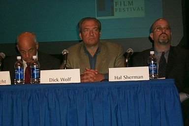
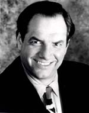
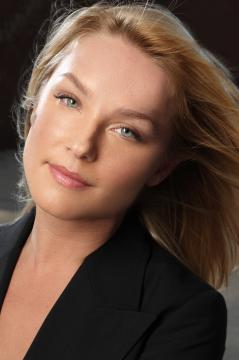
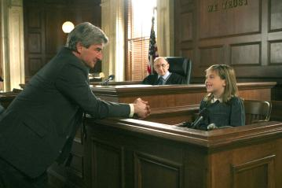

|
 Dick WolfIn the entertainment industry, particularly with respect to television, if you're always dolled up and ready for a glamorous photo shoot, you're probably a nobody. If you dress like an off-duty cop and you shamble around with an expressionless Larry Flynt slump while claiming not to know very much about TV, chances are you're responsible for something important and lucrative in the world of show business. Executive Producer Dick Wolf (b. December 20, 1946) is just such a man. He came from the advertising world: his father was a publicist, and young master Dick learned the fine art of packaging products at an early age. He likens his master creation, the fourteen-year-long Law & Order franchise filmed entirely on location in New York (Law & Order, Law & Order: Special Victims Unit, and Law & Order: Criminal Intent) to different flavors of toothpaste or Campbell's soup. "I learned branding from Procter & Gamble. There are seven Crests: they're different tastes, but the reason they can do seven is because people know, 'oh, it's Crest. I can buy it.' There are 312 toothpastes out there and none of them are any better than Crest. And the one rule on brand extensions is there is no such thing as a bad brand extension except one that doesn't work. Because that hurts the whole brand. Like New Coke. If Special Victims Unit had turned out to be a flop, I think it would have really negatively affected Law & Order. If you're going to eat soup, you see the can, you go, 'well, I've never had that but I'm sure if I wanted Cream of Mushroom theirs is going to taste as good as any other cream of mushroom.'" The format of Law & Order was derived from a 1950s police drama called Arrest & Trial. The "Bible" for Law & Order -- the place where stories are "ripped from the headlines" -- is the front page of the New York Post. The dialog of the program rarely veers from the narrative structure offered by the old Dragnet series: just the facts and not much chit-chat about anything else. When Law & Order first came out it was rated poorly, at 77th place in the Neilsens. Wolf still has all the original reviews. He knew that all dramas take a full season to take shape, and he also knew that during the first year of any non-situation comedy, there are usually a few good episodes inbetween absences of consistency. "The first twenty-two episodes of Law & Order are a roller-coaster," Wolf winces. "A lot of oops, that didn't work." The show has been nominated for the most consecutive Emmy Awards of any primetime drama series (11) , but has only secured one. Since that time, there have been numerous references in Law & Order to both September 11th and Queer Eye for the Straight Guy. Interference from NBC is a thing of the past, but they did control many aspects
of the show early on. At the end of the third season, NBC executive officer
Warren Littlefield informed Wolf that he would need to put more girls in the
show or risk cancellation. Wolf's least favorite of all 300 episodes is the one where the daughter of Detective Lennie Briscoe [Jerry Orbach] gets killed by a drug dealer. "It was exactly what the show wasn't, but Jerry has pled for years, "Please let someone die in my arms so I can get nominated." And it was so not the show it kind of screamed at you. The odds of a detective having a daughter who is murdered by a drug dealer are -- zero! Sorry, that's how it is." Orbach has mentioned in interviews on more than one occasion that "there's only so many times we can canvas the neighborhood." "I've never understood the obsession with younger writers and dramas," Wolf told a reporter. "Comedies I understand, but how do you write drama at 23, you haven't experienced anything. You know about 23 year olds. It's kind of hard to write about 60 year old EADA's. Only a couple of us are 60 years old so far, but there are not many 23 year olds who can write about life-changing situations unless it's medical. That sounds weird, but there's not the mileage on the odometer to get under the surface. There are exceptions that prove the rule --Dickens wasn't bad at 23." Wolf has one regret. "I shouldn't have had Jill Hennessey [Claire Kincaid] die. That was 'cause she would have come back. She wanted to do episodes and I said, 'you're dead.'" |